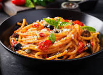

Ingredients:
```html
- 1 tablespoon olive oil
- 1 teaspoon salt
- 1/2 teaspoon black pepper
- 1 teaspoon garlic powder
- 1 teaspoon dried Italian herbs (basil, oregano, thyme)
- 1 cup chopped vegetables (such as bell pepper, zucchini, or mushrooms)
- 1/2 pound ground meat (beef, turkey, or chicken) or plant-based protein
- 1/4 cup fresh basil leaves, chopped (for garnish)
- Optional: red pepper flakes for heat
```
Instructions:
```html
- If using, in a separate skillet, heat olive oil over medium heat.
- Add chopped vegetables and sauté for 5-7 minutes until tender.
- If using ground meat, add it to the skillet and cook until browned, breaking it apart with a spoon, about 7-10 minutes.
- Season the sautéed mixture with salt, pepper, garlic powder, and Italian herbs.
- Add the sautéed vegetables and meat to the pot of pasta and sauce, stirring to combine everything evenly.
- Cook for an additional 2-3 minutes to allow flavors to meld.
- Serve hot, garnished with chopped fresh basil and additional Parmesan cheese, if desired.
- For extra flavor, sprinkle with red pepper flakes before serving, if using.
```